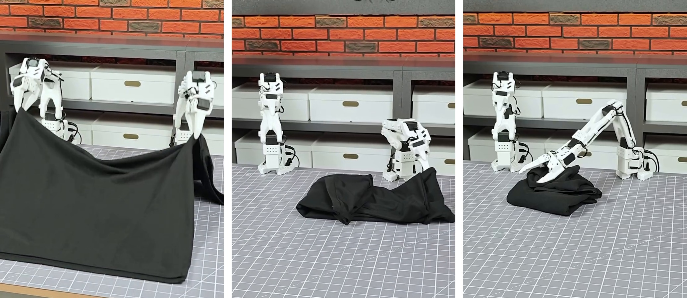
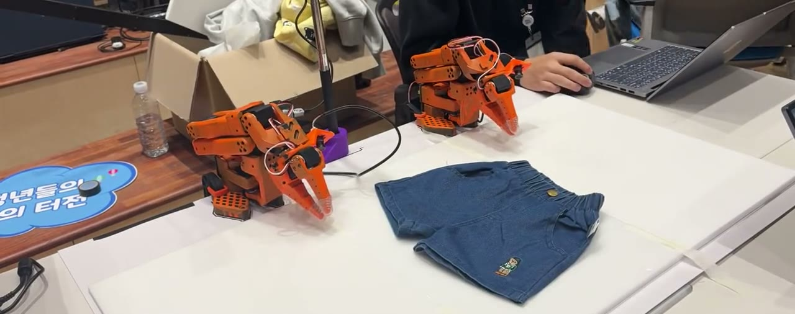
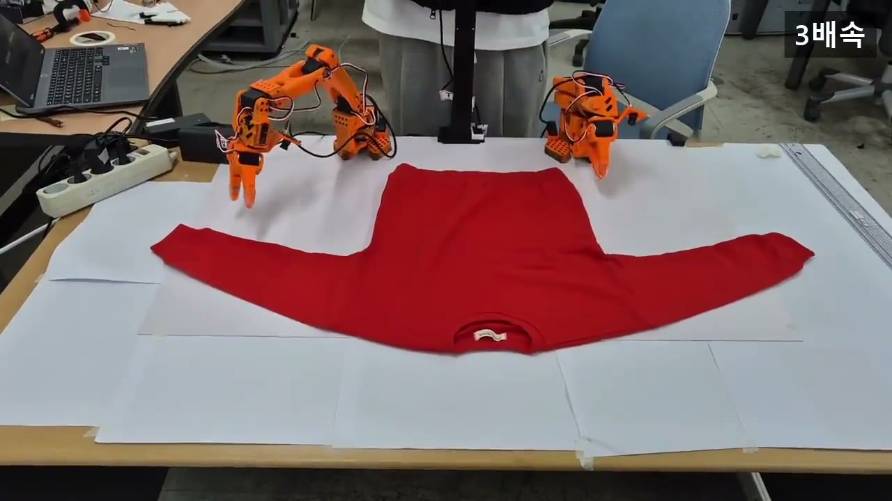
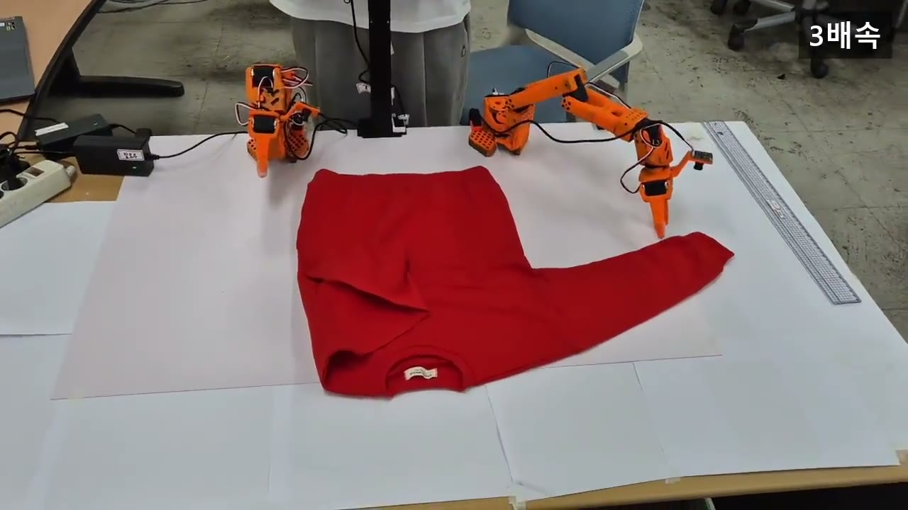
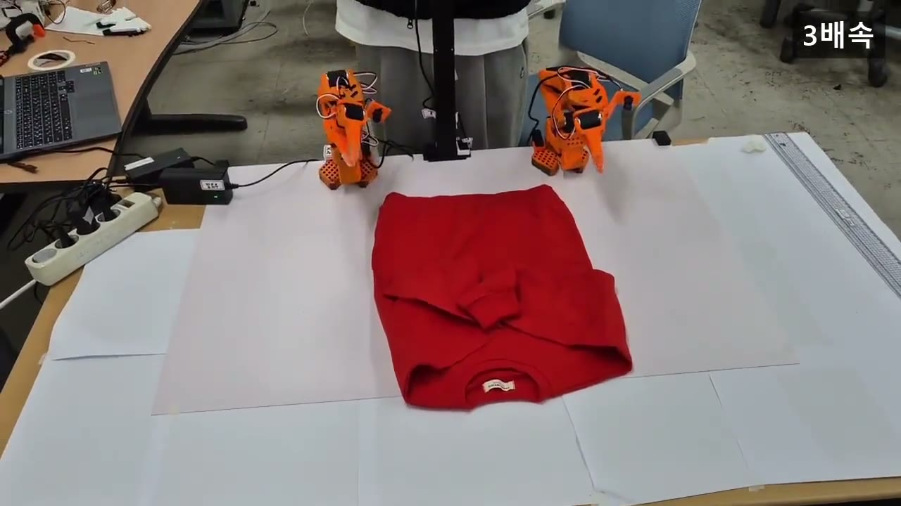
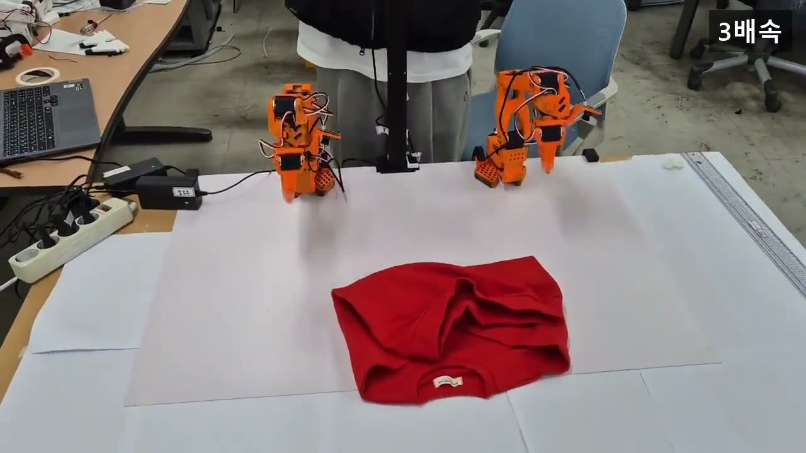
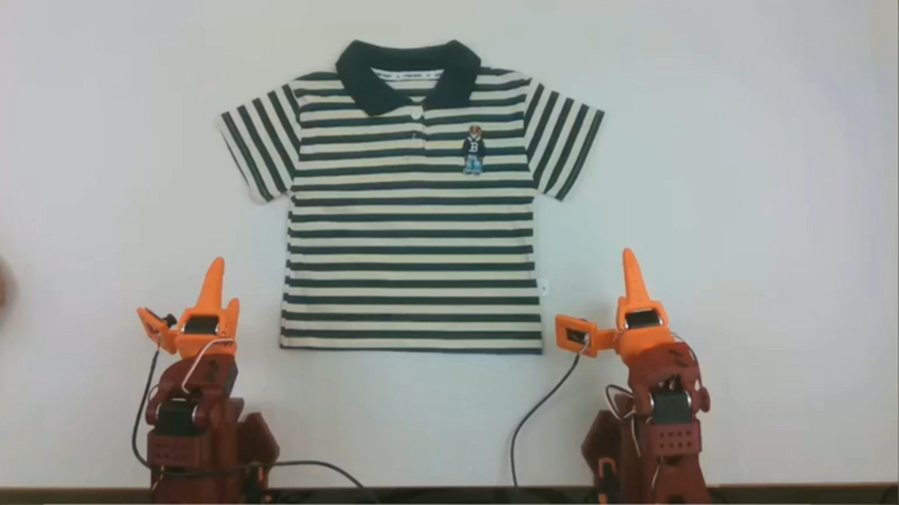
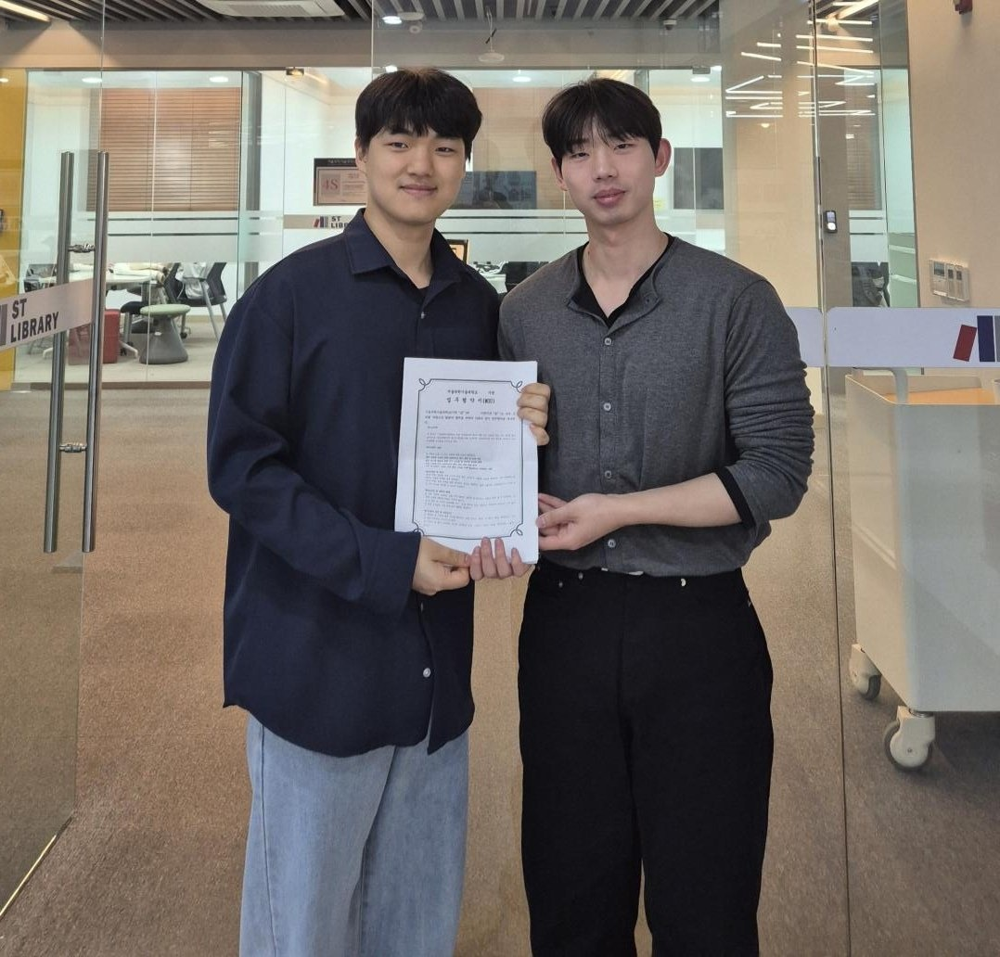

출고 직전 마지막 수작업은 옷 접기와 포장입니다. 알로하 로보틱스는 사람의 시범을 배운 양팔 로봇을 현장에 두고, 월 구독으로 그 일을 대신합니다.
자동 포장기는 이미 접힌 옷만 받습니다. 옷을 펴고 접는 일은 여전히 출고 담당자가 한 벌씩 손으로 합니다.
세일·시즌 주문이 몰리는 날, 접기·포장 인원을 바로 늘리기 어렵습니다. 2026년 최저임금 기준 한 사람의 월 인건비는 215만 6,880원입니다.
티셔츠 전용 장비는 소재·모양이 바뀌면 멈춥니다. 소호몰은 하루에도 여러 품목을 섞어 출고합니다.
작은 쇼핑몰과 3PL은 큰 설비 투자를 하기 어렵습니다. 써 보고 효과를 확인한 뒤 결정하고 싶어합니다.
작업자가 리더 팔로 몇십 번 시범을 보이면, 로봇이 그 동작을 모방학습으로 익힙니다. 새 품목도 같은 방법으로 늘려 갑니다.

출고 작업대에 양팔 로봇을 두고 티셔츠·긴팔·반바지를 접습니다. 월 구독으로 도입하고, 현장에서 나온 실패 장면으로 계속 다시 학습합니다.

«우리 현장의 이 수작업, 로봇이 할 수 있나?»를 2주 안에 판정합니다. 현장에서 시범 데이터를 모으고, 로봇이 맡을 동작과 사람이 남을 동작을 나눠 보고합니다.
작업자가 리더 팔을 잡고 실제 옷을 접습니다. 카메라와 관절 값이 함께 기록됩니다.
시범 데이터로 양팔 정책을 학습합니다. 새 품목은 시범만 더하면 됩니다.
출고 작업대에서 로봇이 옷을 접습니다. 사람은 남은 동작과 검수를 맡습니다.
연구실에서는 나오지 않는 현장의 실패 장면을 모아 다시 학습합니다.
렌더링이 아닌 실제 로봇 영상입니다. 긴팔 티셔츠를 펼친 상태에서 끝까지 접습니다.
긴팔 티셔츠 접기 · 원본 102초를 3배속으로 줄임




반바지 접기 · 8초

학습용 시범 데이터 수집 장면
■ 성공 22회 · □ 실패 8회 — 티셔츠 접기, 30회 연속 무편집 측정

연매출 5억 원 규모의 패션 쇼핑몰 Mens floor와 업무협약을 맺었습니다. 실제 출고 현장에서 로봇이 맡을 동작을 검증하고 있습니다.
주문이 몰리는 날 사람을 급히 구하지 않아도 접기 작업이 이어집니다.
반복되는 접기는 로봇이 맡고, 판단이 필요한 일은 사람이 맡습니다.
전용 폴딩기와 달리, 시범만 더하면 새 품목을 접습니다.
월 구독이라 로봇을 사지 않습니다. 효과가 없으면 멈추면 됩니다.
우리 현장에서 실패한 장면이 그대로 다음 학습에 들어갑니다.
기존 출고 라인을 바꾸지 않고, 작업대 하나에 로봇을 올립니다.
반나절 동안 현장의 품목과 작업대를 보고, 로봇으로 시범 시험을 합니다.
현장 시범 데이터로 학습하고 성공률을 측정합니다. 로봇·사람 분업안을 보고합니다.
작업대에 로봇을 설치하고 월 구독으로 운영합니다. 실패 장면은 계속 재학습합니다.
LG전자 트랙 · 2026.10
2026.09
전선 포설 모방학습 · 2026.11
178팀 중 본선 20팀 · 2026.10
2026.10
2026.10
알로하 로보틱스는 서울과학기술대학교에서 시작한 로봇 스타트업입니다. 로봇 하드웨어와 학습을 직접 다루고, 현장에서 사람이 어떤 손동작을 하는지부터 확인한 뒤 로봇에게 가르칩니다.
하루 출고량, 주로 접는 품목, 지금 가장 손이 많이 가는 작업을 알려주세요. 현장 방문 시험부터 함께 검토합니다.
도입 문의하기 →